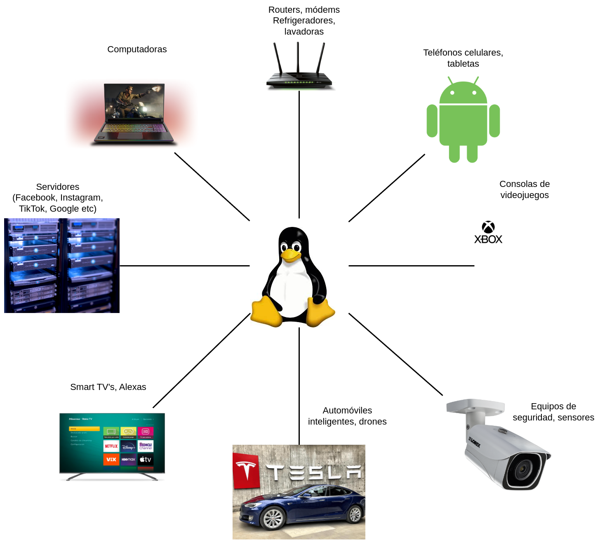
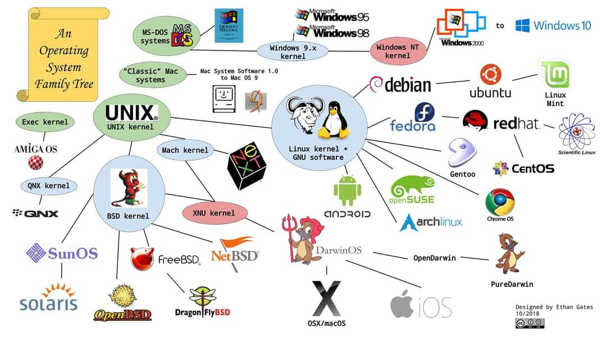

Table of Contents
1. Introducción a Linux
Linux es el sistema operativo por excelencia de los programadores, por lo que debes de aprender desde hoy mismo.
1.1. ¿Qué es linux?
Linux es un sistema operativo así como Windows y Mac OS bajo la licencia de GNU, que básicamente es lo mejor que te pasará en tu vida y te explicaremos por qué.
Cuando compras una computadora nueva, viene con Windows o Mac instalado por omisión. No lo vemos pero el precio del sistema operativo viene incluido en el producto. Y hace algunos años, debías comprar licencias de Windows para poder usarlo además que no puedes saber cómo funciona el sistema a nivel de software. Linux siempre ha sido y será totalmente gratis, significa que
- No pagas nada por el software del sistema base, solo fierros (hardware)
- Sabes cómo funciona instrucción por instrucción el sistema operativo lo cual es útil para aprender el funcionamiento a bajo nivel
- Es muy ligero y rápido ya que no existen programas basura (como un antivirus) consumiendo recursos; incluso si existen puedes quitarlos
- El código es abierto para el público, puedes modificarlo a tu antojo. Existen más de 120 distribuciones de linux.
- Puedes vender software hecho en linux (con algunas reglas)
- La mayoria de Smart TV, Alexas, teléfonos (Android por supuesto), consolas de videojuegos son software basado en Linux.
- Al ser código abierto, si existe software malicioso este se reporta a la comunidad, dejando solamente software puro, por lo que es más probable que te caiga un rayo a que encuentres virus, incluso si insertas USB infectadas.
- Más del 90% de servidores en el mundo utiliza Linux, pues se ahorran un buen dinero y aparte funciona tan bien que incluso el mismo Windows utiliza servidores en Linux.
- Hecho por programadores para programadores.
La única desventaja es que nunca nos enseñan a utilizarlo, sigue
oculto entre las sombras, pero el mundo tal y como lo conocemos
(internet en particular) no exisitiría si no existiera Linux. En los
últimos años ha tenido un mayor crecimiento; tanto que ya existe
muchos soportes para videojuegos y programas ejecutables en
Windows como wine.
En esta carrera, usar Linux es pan de cada día, ya que utilizamos la programación como una herramienta más para nuestra carrera.
1.2. ¿Por qué usar Linux?
La principal razón importante es porque no somos usuarios de la computadora, somos los que dominan las computadoras. Un hacker usa la computadora con el poder de sus dedos a una velocidad impresionante utilizando pantallas llenas de números random; no usan mouse e interfaz gráfica. Mi tío Aurelio que estudió contaduría sí, él es un usuario de la computadora y consume programas que nosotros computologos desarrollamos.
Un piloto de fórmula 1 no es un piloto como yo que uso el coche cada fin de semana. Un piloto de fórmula debe conocer a su auto a detalle para poder aprovechar al máximo su capacidad. El punto es: Si queremos utilizar todo el potencial de la computadora, debemos conocer a las computadoras y qué mejor lugar que viendo el código que ejecutan gracias al software libre Linux.
Otras buenas razones son:
- Aprendes inglés
- Aprender a nivel servidores. Es fácil adaptarse a lo que se utiliza en el mundo real.
- Es libre y gratuito, no te metes en problemas legales (hackers)
- Se complementa bien con la programación
- Tienes ventaja sobre los usuarios finales
- No jala el VALORANT. (ya, deja el vicio y a estudiar xd)
Al final del día, es tu decisión, ¿en qué vas a invertir tu tiempo a futuro?, ¿seguir con lo mismo o conocer más alla de lo que te puedas imaginar?.
1.3. Historia de Linux
Tal vez nunca veas esto nunca, pero es interesante entender cómo es que surgió la idea de tener una computadora. Te cuento la historia como un cuento.
1.3.1. 1939
Todos sabemos que existió una segunda guerra mundial; suena aburrido, pero el hecho de tener una guerra es algo que nos afecta a todos. Hoy en día se habla de una tercera guerra con el problema de Israel.
Siempre en las guerras, existen avances tecnológicos, tristemente como la bomba nuclear. En este caso, tocó pelear contra una máquina alemana (del bando de los Hail Hydra) llamada Enigma que era como una maquina de escribir pero mamadísima hija de su ptm que cifraba mensajes en una clave casi imposible de descifrar. Casi imposible porque sí fue posible, gracias al primer computólogo y padre de las Ciencias de la computación Alan Turing; me pregunto si los chocolates son en su honor.
1.3.2. 1940
Alan turing tenía la idea de que una máquina puede ganarle a otra máquina por lo que este genio desarrolló primero una máquina teórica conocida como Máquina de turing para después implementarla en una máquina física llamada Bombe. Alan Turing no lo sabía, pero creo todo el campo de la computación por accidente al tratar de salvar el pellejo a miles de personas; mezclando matemáticas, ingeniería eléctica y aterrizando temas como la inteligencia artificial.
Tristemente tenía apego con los hombres, por lo que se suició al ser descubierto por el gobierno británico y ya no pudo aportarnos más; pero sin duda una de las mentes maestras de este siglo.
Aquí puedes ver la película sobre Turing
1.3.3. 1969
Después de que Turing dejara el camino trazado sobre esta nueva área del conocimiento, muchas universidades, empresas y personas creaban sus propios sistemas operativos. Fue hasta este año donde se unifica el código para que sea portable, creando así el sistema UNIX, que después de él seguirían muchas más versiones.
1.3.4. 1989
Richard Stallman, fue un hacker y activista de su tiempo. El creía que un programador debía poder modificar software a su convenciencia, ya que eventos como bloqueaar el acceso a la impresora de su escuela o poner un virus en un programa si no se pagaba lo motivaron a crear el concepto de código libre. Como hacker hackeaba estos programas pero lucho por algo más grande.
Las licencias de GNU (General Public License) es una filosofía de software donde nadie es dueño del código y a la vez de todos. Su tirada principal fue hacer una versión de UNIX con esta licencia, junto con otro grupo de hackers, clonando el programa en sí.
1.3.5. 1991
No fue hasta este año que el famoso Pinguino Linus Torvalds, un estudiante filandes crea su kernel basado en UNIX para un sistema operativo que el llamó Linux. Ya tenían un sistema operativo que podía funcionar casi en cualquier computadora, y libre de reglas comerciales ya que todo fue desarrollado por ellos.
En una ocasión, Linus escuchó hablar del software libre por el mismo Stallman y le agradó tanto esta idea de que el código debía ser libre por lo que decidió dejar su propio sistema operativo bajo esta licencia. Así nació Linux, un sistema operativo gratuito para todos, tirando a las empresas que se querían apropiar del software y monopolizarlo.
En resumen, Linux se conforma de
- UNIX, que es la base del sistema operativo de Linux, el corazón.
- Licencia GNU, para todo el público.
Por lo que Linux es también llamado GNU/Linux. Si no fuera por estos dos personajes, hoy en día estudiar computación costaría demasiado, como cuesta software de diseño como Autocad, Adobe o Microsoft Office*.
1.4. Actualidad
Hoy en día, maś del 90% de dispositivos electrónicos corren una versión de linux

Y UNIX es quien más varaciones tiene, lo que significa que es flexible para adaptarse a cualquier necesidad. Windows solo está enfocado en el usuario por ejemplo.

Puedes notar iOS está basado en UNIX, lo que significa que puedes usar MAC como si fuera Linux (más o menos). Xbox utiliza una ramificación de FreeBSD, y grandes corporaciones utliizan redhat como sistema base. Android es básicamente el linux para teléfonos.
La mala noticia es que Windows domina el mercado de los usuarios, y más del 70% de programas estan hechas para su arquitectura, pero no hay problema, el gigante Linux avanza lento, y eventualmente alcanzará a Windows. Viva el software libre!